Iwanai
Iwanai · Hokkaido
Iwanai
Highlighted on the Hokkaido map.
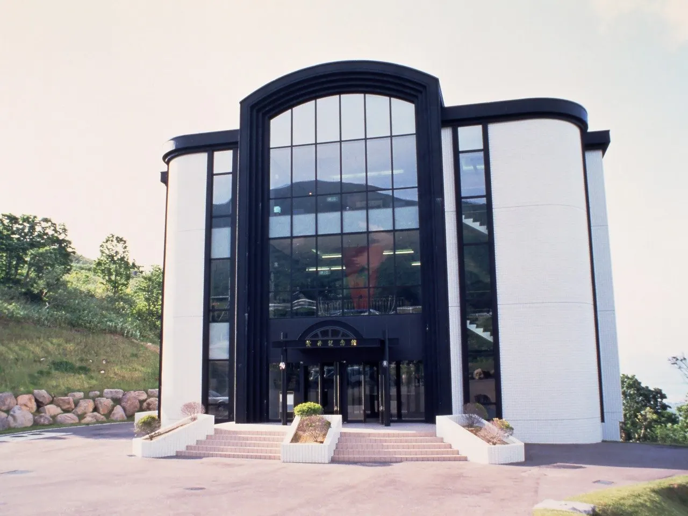
Stay
ホテル 松や
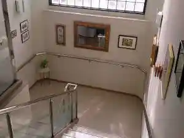
Hoteru Matsu Ya
サウナ＆ヴィラHIBIKA
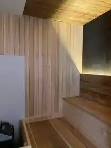
Sauna & Vira Hibika
いわない温泉 おかえりなさい
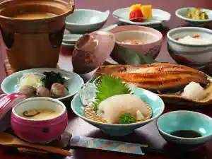
Iwanai Onsen Okaerinasai
コテージアリスの里
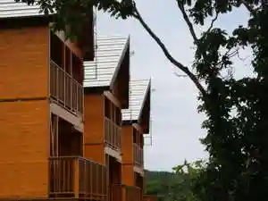
Koteejiarisu No Sato
サンサンの湯
Sansan No Yu
いわない高原ホテル 海の幸と源泉掛流し温泉やすらぎと癒しの宿
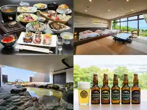
Iwanai Kougen Hoteru Umi No Sachi To Gensen Kakari Nagashi Onsen Yasuragito Iyashi No Yado
Dining
えいじん 岩内店
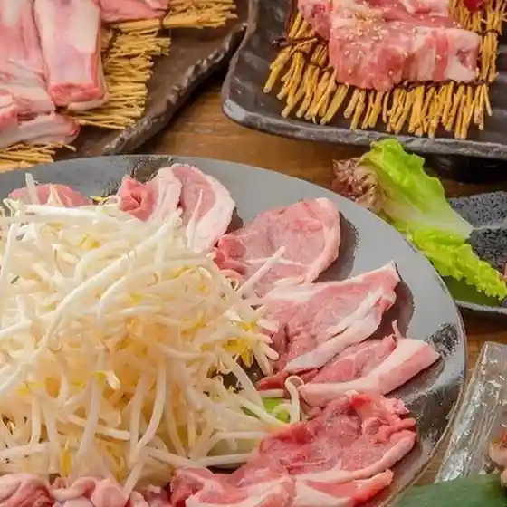
Eijin Iwanai Mise
民宿太平

Minshuku Taihei
ごはんどころ Goen.
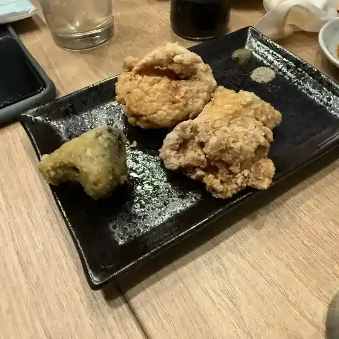
Gohandokoro Goen .
やぶＣ‐ＢＡＲ

Yabu C ‐ B A R
菓子工房Karupin
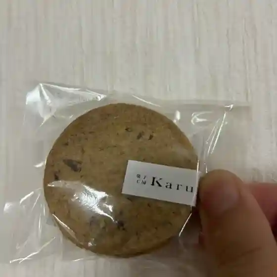
Kashi Koubou Karupin
柳堀商店

Yanagibori Shouten
石塚水産
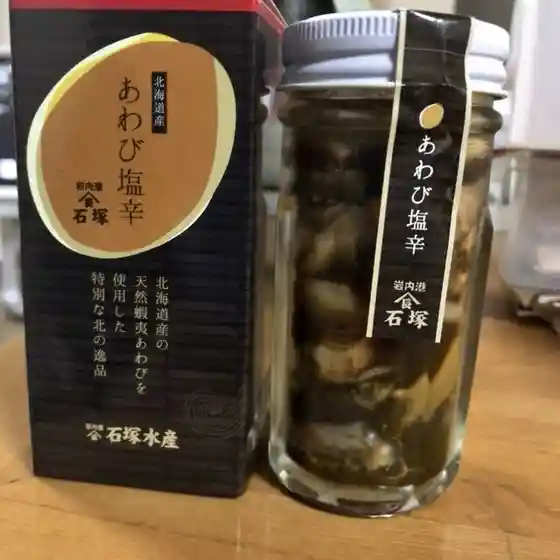
Ishizuka Suisan
北緯43度のお土産屋さん
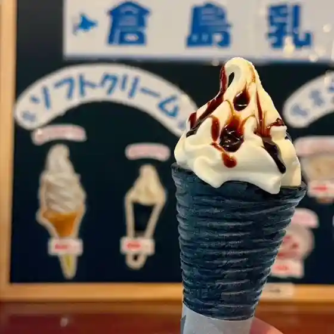
Hokui 43 Do Noo Miyageya San
まんだい
Mandai
日本海
Nihonkai
イワナイブルワリー&ホテル
Iwanaiburuwarii & Hoteru
株式会社 カネトイチ 土門商店
Kabushikigaisha Kanetoichi Domon Shouten
サツドラ 岩内東山店
Satsudora Iwanai Higashiyama Mise
大門旅館
Daimon Ryokan
8"achi
8&Quot;Achi
佐藤食肉
Satou Shokuniku
らーめん誼や
Raamen Gi Ya
寶龍 岩内店
Houryuu Iwanai Mise
一八興業水産
Ichihatsu Kougyou Suisan
串揚げ 勝元
Kushi Age Katsumoto
ブカヨ珈琲焙煎所
Bukayo Koohii Baisen Tokoro
大衆酒場 魚三
Taishuu Sakaba Sakana San
サラサ ダイニング
Sarasa Dainingu
尾崎商店
Ozaki Shouten
Sights
Arai Memorial Art Museum
Arai Memorial Art Museum
Kida Kinjiro Art Museum
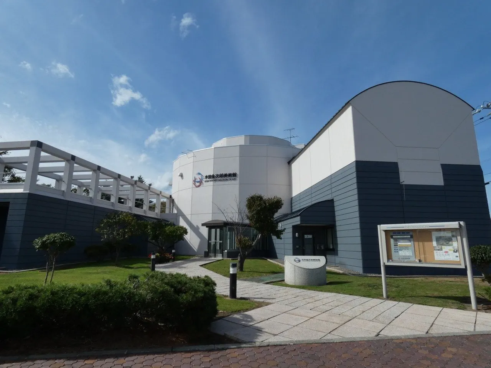
Kida Kinjiro Art Museum